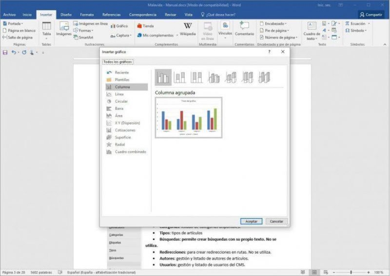

Microsoft Word
Microsoft Word es un software informático procesador de texto, uno de los más utilizados a la hora de trabajar con documentos digitales, que nació de la mano de IBM en 1981.

Microsoft Word es un software informático procesador de texto, uno de los más utilizados a la hora de trabajar con documentos digitales, que nació de la mano de IBM en 1981.
Microsoft Word es un software informático procesador de texto, uno de los más utilizados a la hora de trabajar con documentos digitales, que nació de la mano de IBM en 198 La aparición de las computadoras promovió el desarrollo de este procesador de texto que facilitó el trabajo de redacción. El Word automatizó y mejoró la tarea de escribir manuscritos ya que permitió revisar las veces necesarias lo escrito, para editarlo y reformularlo antes de la etapa de impresión. El Word es un programa elegido por una gran cantidad de usuarios porque es un procesador bastante simple. Pertenece al Paquete Office y se puede instalar en computadoras con diferentes sistemas operativo
Permite al usuario escribir textos, monografías, ensayos o artículos, de manera simple y ordenada. Puede utilizarse con casi cualquier sistema operativo y es uno de los procesadores de texto más usados del mundo. Tiene una versión de escritorio, una versión web y aplicación para móvil y tabletas. Se vale de recursos de texto y gráficos. Permite realizar documentos que pueden guardarse en la computadora e imprimirse. Tiene diferentes versiones, ya que se actualiza con frecuencia. Permite interactuar con otros programas del Paquete Office como Excel (en Word se pueden pegar gráficos y datos que provengan de planillas de cálculo)

Formato de letra. Permite elegir entre múltiples tipografías. A través de los íconos de la barra de herramientas se puede ajustar el tamaño, resaltar en negrita, subrayar o poner en cursiva cualquier párrafo, oración, palabra o carácter del texto. Tamaño de hoja. Permite configurar el tamaño de la hoja y su disposición, ya sea vertical u horizontal. Cortar y pegar texto. Al hacer clic derecho con el mouse, o mediante comandos del teclado, se puede cortar o copiar una parte del texto y pegarla en otro lugar del documento. Imágenes. Permite insertar imágenes para que acompañen al texto. Gráficos. Desde el menú de herramientas permite realizar cuadros explicativos para demostrar datos o estadísticas. Tablas. Permite crear tablas para plasmar información, también se puede exportar una tabla ya hecha en Microsoft Excel. Corrector ortográfico. Resalta en rojo o azul los errores de tipeo o de gramática y sintaxis que detecta. Contador de caracteres. Cuenta los caracteres o palabras que tiene el documento escrito. Listas. Permite realizar listados y numeraciones desde la opción de viñeta en el menú de herramientas. Encabezado y pie de página. Permite agregar en la parte superior o inferior del documento: título, nombres de autores o numeración. Número de página. Numera automáticamente las páginas del documento. Formato de párrafo. Permite personalizar el formato del texto a través de funciones de espaciado, interlineado, marcas de párrafo o sangría, que están en la barra de herramientas en la sección: párrafo. Notas al pie. Permite agregar al final de la página información adicional o datos sobre alguna parte del texto. Control de cambios. Registra todas las correcciones y cambios que se realicen en el texto. Imprimir. Permite visualizar el documento en vista previa e imprimirlo. Plantillas. Permite utilizar diseños preestablecidos en los que solo se modifica la información. Existen plantillas para sobres y etiquetas. Guardado. Permite guardar el documento en diversos formatos. Asistente. Cuenta con un asistente que resuelve las dudas que puedan surgir en la ejecución del programa.